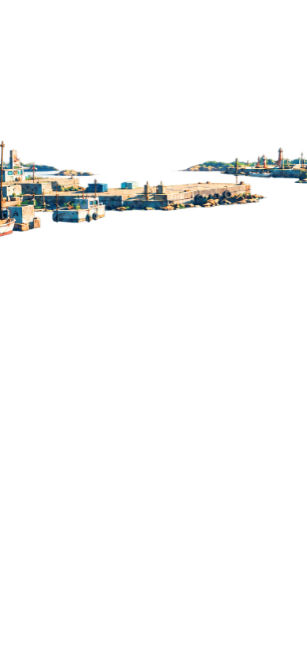
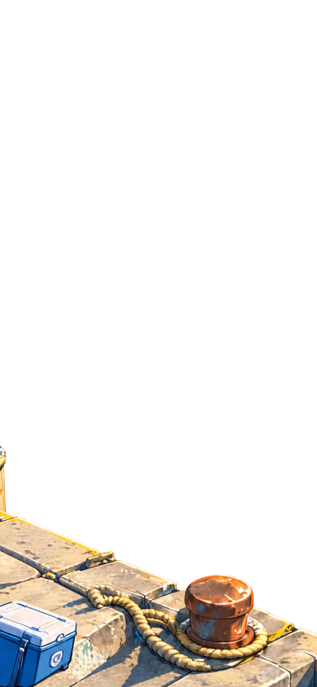
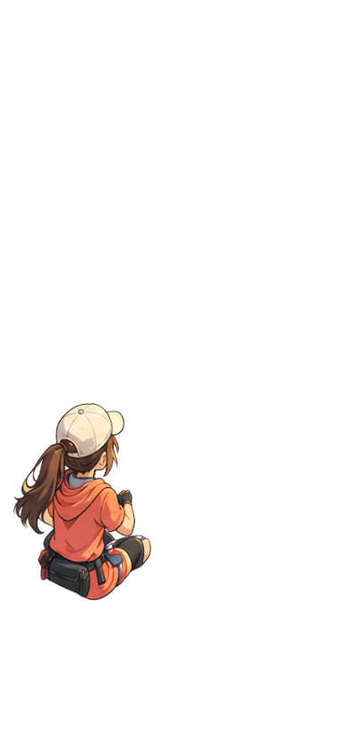
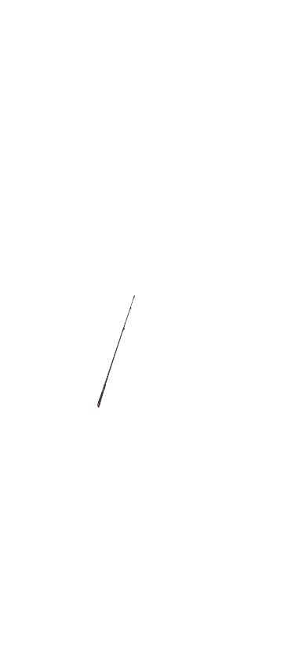

<!doctype html>
<html lang="ja">
<meta charset="utf-8">
<meta name="viewport" content="width=device-width,initial-scale=1">
<title>AINAN separated cast motion preview</title>
<style>
  * { box-sizing: border-box; }
  body { margin: 0; min-height: 100vh; display: grid; place-items: center; background: #17384b; font-family: sans-serif; }
  .stage { position: relative; width: 390px; height: 844px; overflow: hidden; background: #dff5ff; transform-origin: center; }
  .layer { position: absolute; inset: 0; width: 390px; height: 844px; pointer-events: none; }
  .sky { z-index: 0; }
  .clouds { z-index: 10; animation: cloud-drift 8s ease-in-out infinite alternate; }
  .sea { z-index: 20; }
  .harbor { z-index: 30; }
  .platform { z-index: 40; }
  .character { z-index: 50; }
  .rod { z-index: 60; transform-origin: 130px 515px; animation: rod-breathe 2.4s ease-in-out infinite alternate; }
  .line { z-index: 61; }
  .badge { position: absolute; z-index: 100; left: 10px; top: 10px; padding: 7px 10px; color: white; background: #082a42cc; border-radius: 7px; font-size: 12px; }
  @keyframes cloud-drift { from { transform: translateX(-8px); } to { transform: translateX(12px); } }
  @keyframes rod-breathe { from { transform: rotate(-1deg); } to { transform: rotate(2deg); } }
  @media (max-width: 420px), (max-height: 864px) { .stage { transform: scale(.92); } }
</style>
<main class="stage" aria-label="AINAN 分離素材モーション試作">
  
  
  
  
  
  
  
  <svg class="layer line" viewBox="0 0 390 844" aria-hidden="true"><path d="M169 379 L310 235" fill="none" stroke="#effcff" stroke-width="1.5" stroke-dasharray="5 7" opacity=".92"/></svg>
  <div class="badge">prototype / clouds + held rod motion</div>
</main>
</html>
